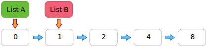
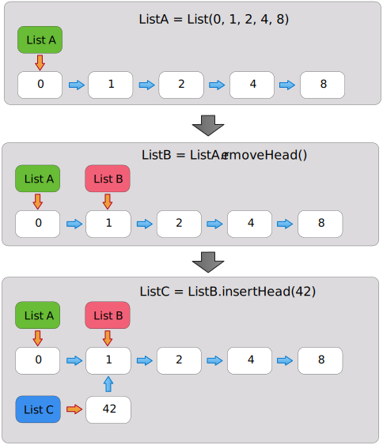
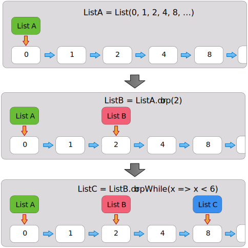
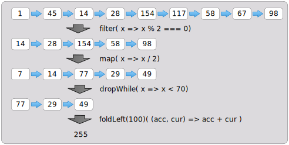

Implementing an immutable List in JavaScript
Continuing my little series on functional programming in JavaScript, I’m tackling and implementing
the List type now and explain how the immutability of that data structure is accomplished, what
a memory efficient implementation would look like and finally discuss the major functionality
“groups” of this data type. I’m going to base the behavior and API of my implementation on
the List type in Scala.
How it all works
One can imagine two different paradigms when implementing an immutable list. The first one would be to make a complete copy of the list and then add a node with additional data. The second one would be to create a new node, prepend it to the existing list and keep everything else the same. This means that the reference to the original list head still exists and still points to all the same nodes in the list. The only change is that we have a new list “head”, pointing to a new node, which then connects with the previous list’s head node.
The following figure illustrates how that might look in memory, showing the references
for two Lists A and B, which share a good chunk of their data. Here, we have a List B with
four nodes containing the values 1, 2, 4 and 8, respectively. From this list, we created a new
List A by prefixing a new node containing the value 0, so that List A is an extension of
List B, containing the values 0, 1, 2, 4 and 8.

In principle, both aforementioned paradigms work, but the second one, where we are prepending nodes to an
existing List, is more efficient. I believe it is easy to see that simply prepending a node
to an existing list occurs in constant time (i.e. O(1)), whereas creating an entirely new
instance of an existing list by copying and adding a new node would be O(n), i.e.
scale with the size of the
list since we’d have to duplicate each of the n elements once.
This memory and performance efficiency is also the reason to prefer prepending values to a list over appending values, since the appending would need to generate a copy of the entire list instead of creating just a single new node.
Now with the basic concept out of the way, we can start thinking about
- how we would go about instantiating such a construct,
- what functionality we would want to efficiently work with this data structure and
- what the data management implications of each desired method are.
Creating an instance of a List
When starting to think of the structure of this construct, we can see that we need at least two
things: a node that contains the data and can link to another node, i.e. hold a reference. The
second thing would be some sort of “object” that represents our List made up of these nodes,
i.e. which holds a reference to the first node in the List.
The node of a List
When we think of a List, we can imagine it being comprised of a multitude of container elements,
or nodes, where each one contains a value and a reference to the next node in the list. This
can be expressed as in the following code snippet:
var Node = function(val) {
var nodeValue = val;
var nextNode = null;
this.get = function(skipClone) {
return (skipClone) ? nodeValue : cloneNodeValue(nodeValue);
};
this.bind = function(node) {
if (nextNode === null) nextNode = node;
};
this.next = function() { return nextNode; };
};Here, we have a constructor function with two private properties, nodeValue and nextNode,
implementing the two properties explained previously. To make the interaction easier, we define a few utility
functions, to
- retrieve the node’s value by using
get() - extend the
Listby creating a binding between the current and another node inbind()(but only when that node is not already filled with a value, i.e. containsnull) - traverse the list using
next(), which simply returns a reference to the node linked to by the current node.
While this is the main functionality, the get() method also allows us to pass a boolean value,
which will either return the current node’s value (when passed true) or, by default, a cloned
value for cases where the
type of the contained entity is either an object or an array. The reason for this behavior is that
JavaScript passes arrays and objects by reference, so that if we simply returned the content, we
would enable modifications to the cloned node to affect the original list, which is supposed to
be immutable!
To ensure that immutability, we clone entities passed by reference (objects, arrays) into the new
list, instead of just pointing them to the existing instance. That is accomplished by the
cloneNodeValue() function, which I’ll list here without going into details of its implementation.
function cloneNodeValue(val) {
var type = Object.prototype.toString.call(val).slice(8, -1);
switch (type) {
case 'Array':
var l = val.length;
var clone = [];
for (var i=0; i < l; i++) {
clone[i] = cloneNodeValue(val[i]);
}
return clone;
break;
case 'Object':
var k, keys = Object.keys(val), obj = {};
while (k = keys.shift()) {
obj[k] = cloneNodeValue(val[k]);
}
return obj;
break;
default:
return val;
break;
}
}Now that we have the functionality of a Node squared away, we can start to look at the
implementation of the actual List:
var ImmutableList = function() {
if (this instanceof ImmutableList) {
this.head = null;
this.last = null;
this.length = arguments.length;
var l = arguments.length, i,
nn;
// Take all the arguments and put them into the list in the order of their appearance.
for (i = l-1; i > -1; i--) {
nn = new Node(arguments[i]);
if (i === l-1) this.last = nn;
nn.bind(this.head);
this.head = nn;
}
} else {
var param = Array.prototype.slice.call(arguments);
param.unshift('');
return new (Function.prototype.bind.apply(ImmutableList, param));
}
};
var ListProto = { ... };
ImmutableList.prototype = ListProto;
ImmutableList.prototype.constructor = ImmutableList;
module.exports = ImmutableList;While this is a fair amount of code, it’s not super complicated, and it uses a few techniques already seen in implementation of the Option monad.
To allow instantiation without the new keyword, we check in line 3 whether it’s an instance of
the ImmutableLIst. If not, the else explicitly calls the constructor with new and passes the
arguments on. So either way, we create a new instance with this function.
The actual functionality of the constructor function starting on line 4
- defines properties for the
lengthof the list, thehead, i.e. the first node of the list, and a reference to thelastnode of the list. - loops over all passed parameters, creates a
Nodefor each value and binds the nodes together to form theListin theforloop starting on line 12.
The remainder of the listing shows an object being assigned to ListProto, which will serve as
the prototype and contain all the methods we’re going to develop which operate on the List’s
values. The remainder of
the code sets up the prototypal inheritance and exports the constructor function.
Here is how we would create a list:
let fibonacci = ImmutableList(1, 1, 2, 3, 5, 8, 13);So now, we’re able to create a new List, but with the code the way it stands right now, we can’t
do anything useful with it. Let’s look at what we might reasonably do with our list and how
that functionality would be implemented (in ListProto)
Operators on a List instance
We can roughly partition the functionality of the methods on a List into the following categories:
- We can extend the existing list by adding nodes or return a subset of the existing list
- We have to create a whole new instance of another
Listbecause we want to change its node’s values - Transform the
Listinto a different type, e.g. arrays or strings or reduce it into a single value (e.g. the average of a list of numbers) - Provide information about the list, such as whether a value exists
So let’s take this one by one:
Extending an existing list
All the methods in this section follow the same paradigm: To not create a new list or modify
nodes in the existing list. Rather, new data is prepended to the existing list, as explained
earlier in this piece, keeping the nodes and the sequence of data of the existing List the
same. References to the “old” List remain, thereby not modifying those lists.
Examples of this functionality are:
insertHead()takes a value, encapsulates it in a new instance ofNode, prepends it to the existingListand returns a reference to the newly created node, which is the beginning of the new list. Note that any references to the old “head node” are still valid, and from their point of view, theListhas not changed, containing all the same nodes in the same order.removeHead()does not actually remove a node, it merely returns a new List whose first node is a reference to the second node in the list. The resulting list therefore does not know about the previous node and thus looks like a different list, although no new nodes were created or removed.
Here is a sample implementation of those two methods:
var ListProto = {
insertHead: function(el) {
var nl = new ImmutableList();
nl.head = new Node(el);
nl.head.bind(this.head);
nl.length = this.length + 1;
return nl;
},
removeHead: function() {
var nl = new ImmutableList();
nl.head = this.head.next();
nl.last = this.last;
nl.length = this.length - 1;
return nl;
},
// All other implementation examples are also
// part of ListProto
}So what does it look like if we have a List, then remove the first node and add a new one to
the resulting List? The following sequence of graphs explains:

Starting with A, we have an instance of ImmutableList. If we now removeHead(),
we get a new instance of ImmutableList, List B where the head points to the second node
of List A. Performing now an insertHead() on that second List, we end up with yet another
ImmutableList root, which has a node containing the new value, but pointing to the same List
as before. So all three List instances share the majority of their nodes/elements, which makes
this particular implementation memory efficient as well as performant (as shown previously with
O(1) efficiency for adding/removing a node).
Modifying the values of a list, or their order
The concept shown in the previous section is great and efficient, but it cannot adequately cover
the case, where we need to modify the values in each node of the List, as in the case of
map(), filter(), reverse(), reverseMap() and insertAfter(). Here is a description
of what these methods do:
| Method | Functionality |
|---|---|
map() |
Create a new List, where each node’s value is determined by applying a function to the value in the original List |
filter() |
Create a new List of entries that satisfy a provided condition |
reverse() |
Inverts the order of the nodes in the List |
reverseMap() |
Inverts the List, but also applies a modifier to the value in each node |
insertAfter() |
Finds the first node satisfying a condition and inserts a new node after that located node |
Their implementation would look like this:
map: function(fct) {
function iterate(node, nl, fct) {
if (nl.head === null) {
nl.head = new Node(fct(node.get()));
nl.last = nl.head;
iterate(node.next(), nl, fct);
} else {
var nd = new Node(fct(node.get()));
nl.last.bind(nd);
nl.last = nd;
if (node.next() === null) {
return nl;
} else {
iterate(node.next(), nl, fct);
}
}
}
var newList = new ImmutableList();
if (this.head !== null) {
iterate(this.head, newList, fct);
newList.length = this.length;
}
return newList;
},
filter: function(f) {
// Tail recursive
var iterate = function(node, newList, fct) {
if (node === null) return newList;
else if (true === fct(node.get())) {
if (newList.head === null) {
newList.head = new Node(node.get());
newList.last = newList.head;
} else {
var nd = new Node(node.get());
newList.last.bind(nd);
newList.last = nd;
}
newList.length += 1;
return iterate(node.next(), newList, fct);
}
else return iterate(node.next(), newList, fct);
};
return iterate(this.head, new ImmutableList(), f);
},
reverse: function() {
function iterate(node, newList) {
if (node === null) return newList;
else {
var rev = newList.insertHead(node.get());
return iterate(node.next(), rev);
}
}
var rev = new ImmutableList();
rev.last = this.head;
return iterate(this.head, rev);
},
reverseMap: function(fct) {
var rev = new ImmutableList();
function iterate(node, newList) {
if (node === null) return newList;
else {
var rev = newList.insertHead(fct(node.get()));
return iterate(node.next(), rev);
}
}
rev.last = this.head;
return iterate(this.head, rev);
},
insertAfter: function(node, val) {
function traverse(nd, newList, insertVal) {
if (nd === null) {
return newList;
} else if (nd === node) {
var newNode = new Node(insertVal);
var prevNode = new Node(nd.get());
// Add the current node, as we want to insert AFTER
newList.last.bind(prevNode);
// link copy of current node to new node, INSERTING here
prevNode.bind(newNode);
// Link the new node to the rest of the list, which should be unaltered
newNode.bind(nd.next());
newList.last = this.last;
newList.length = this.length + 1;
return newList;
} else {
if (newList.head === null) {
var nn = new Node(nd.get());
newList.head = nn;
newList.last = nn;
return traverse.call(this, nd.next(), newList, insertVal);
} else {
var nn = new Node(nd.get());
newList.last.bind(nn);
newList.last = nn;
return traverse.call(this, nd.next(), newList, insertVal);
}
}
}
var nl = new ImmutableList();
return traverse.call(this, this.head, nl, val);
}Common among all those methods is the use of recursion to iterate() over the current List and
generate the new one.
This being implemented in JavaScript — which does not optimize tail recursion like Scala,
for example — it would have been more prudent to use a while loop to
reduce the risk of stack overflows, but
this being about functional programming, this implementation seemed more appropriate.
The code should be self-explanatory, so I will limit myself to go through the implementation
of the filter() method to point out some common features:
- In each method, we instantiate a new
ImmutableList()and add nodes to it - Within each method, we define a nested function
iterate()that recursively iterates over nodes of the current list - The recursive function for
filter()receives- a reference to a node to consider
- a reference to the new
ImmutableListinstance to populate - a predicate function, returning
trueorfalse, indicating whether a node should be present in the new list.
- Recursion stops, when the current node’s property linking to the next node contains
null, which indicates that no next node is available — thereby indicating the end of the list. Refer to thenext()function in the first listing. - If the passed predicate function returns
truewhen called with the current node’s content, we add the node to the newListinstance created in this function, otherwise - we don’t add the currently considered node to the new list and keep the recursion going.
The other four methods follow the same principles, and I will skip a detailed discussion here.
Creating a subset of the current List
We already saw the removeHead() function, but what if we want to create a new List that
omits more than the head element? To make that use case easier to handle, we have drop() and
dropWhile(), which create a new list without the first n nodes (drop) or a List starting
with the first node for which the passed predicate function returns false (dropWhile). Their
implementation is shown here, again using recursion:
drop: function(num) {
var findNewHeadNode = function(headNode, n) {
if (headNode === null) return null;
else if (n === 0) return headNode;
else return findNewHeadNode(headNode.next(), n - 1);
};
var newList = new ImmutableList();
if (this.length - num > 0) {
newList.last = this.last;
newList.length = this.length - num;
newList.head = findNewHeadNode(this.head, num);
}
return newList;
},
dropWhile: function(fct) {
var findHeadnode = function(node, f) {
if (node.node === null) return {node: null, c: node.c};
else if (false === f(node.node.get(true))) return node;
else return findHeadnode.call(this, {'node': node.node.next(), c: node.c+1}, f);
};
var newList = new ImmutableList();
var newHead = findHeadnode.call(this, {node: this.head, c: 0}, fct);
newList.head = newHead.node;
if (newHead.node !== null) {
newList.last = this.last;
newList.length = this.length - newHead.c;
}
return newList;
}Here is a graphic visually explaining what is going on:

Other noteworthy methods on the List
The implementation found on bitbucket
implements a few more methods, of which I will discuss two more, findNode() and foldLeft():
findNode: function(fct) {
function iterate(h) {
if (h === null) return optionPkg.None();
else if (fct(h.get(true))) return optionPkg.Some(h);
else return iterate(h.next());
}
return iterate(this.head);
},
foldLeft: function(initVal) {
var self = this;
return function(fct) {
function iterate(cVal, node) {
if (node === null) return cVal;
else return iterate(fct(cVal, node.get()), node.next());
}
return iterate(initVal, self.head);
}
},
The findNode() method iterates through the List until it finds an entry that causes the
predicate function passed to it to return a truthy value. The return type of this method is
of the Option type,
thereby indicating whether a node was found. If the value is found,
a reference to the node will be returned in a Some type, otherwise a None is returned. It
should be noted that only the first of potentially several nodes is returned.
The foldLeft() method creates a single value from the entire List, depending on the function
passed to it. It is a curried function that accepts an initial value as its first parameter and
the function used for the processing of every node as its second parameter. This implementation
expects the passed function processing the entries (the second parameter) to take the current
aggregate value as its first parameter and the value to be processed as its second parameter. A
sample implementation would look like this:
const origList = ImmutableList(1,2,3,4,5,6);
const processing = (agg, current) => agg + current;
const listSum = origList.foldLeft(100)(processing);
// listSum will contain the number 121.Discussion and summary
In this post, I’ve looked at the implementation of an immutable List, commonly used in functional programming. Along the way, we used other functional programming paradigms such as
- currying in the
foldLeftmethod - the use of recursion throughout the implementation (instead of
whileloops, for example) - immutability of the data in the nodes — there’s only a getter, but no setter method, so we can only provide the value of a node when instantiating it.
- concepts for keeping a
Listinstance immutable and instead create separate instances sharing data where possible. - memory saving concepts when modifying the
List
The benefit of an implementation of a List like this over, say, the standard JavaScript
Array is the immutability of the instance’s nodes and the memory saving implementation
of creating new Lists from existing Lists by sharing the nodes belonging to both Lists.
Developing this example has also helped me to more deeply understand the principles of
functional programming.
Finally, here is a (somewhat contrived) example on how to use the implementation developed in this post:
const initialValues = [1,45,14,28,154,117,58,67,98];
var l = iList().fromArray(initialValues)
.filter(x => x % 2 === 0) // [14,28,154,58,98]
.map(x => x / 2) // [7,14,77,29,49]
.dropWhile(x => x < 70) // [77,29,49]
.foldLeft(100)((acc, curr) => acc + curr); // 100 + 155
// variable l now is of type `Number` with a value of 255In this example, we take advantage of the fact that each method is returning a new instance of
a List, so we can chain our operators accordingly. We start off with a list of numbers, then do
the following operations on the List:
- filter out the uneven numbers, creating a
Listwith new nodes, then - divide the remaining numbers by 2, also creating a completely new
List, then - create a new pointer to the first node with a value over 69 (i.e. a new pointer to an existing node in the list),
- finally, we create a single number out of the
ListusingfoldLeft()— providing an initial value of100and passing a function for the aggregation of the values.
To finish this post, here is a visual representation of this computation:
